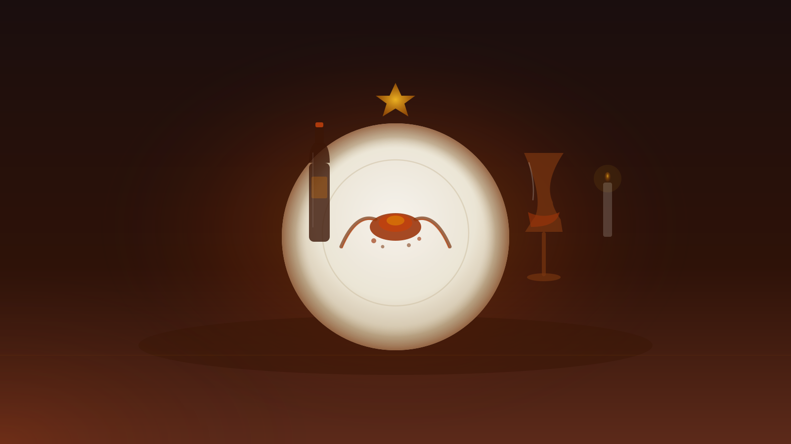
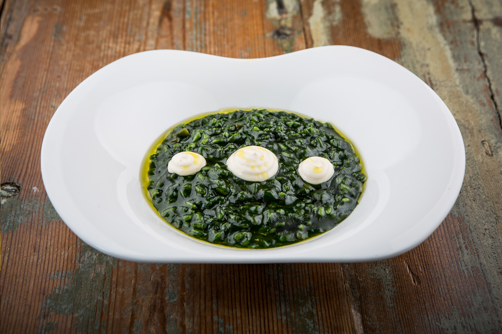

El Puerto
de Santa
María
Three days in the sherry triangle, anchored on Ángel León's three-star tide mill


The restaurant is an old tide mill at the edge of the salt marshes. In 2026, Ángel León moved part of the meal outdoors — guests walk raised walkways over the estero before sitting down. The anchor is settled: Aponiente is the only 2+-star Michelin restaurant in El Puerto de Santa María, and everything else in the weekend is built around that fact.[59]
The anchor: Aponiente ★★★
Ángel León — "el Chef del Mar" — has turned a 19th-century tidal mill on the Cádiz salt marshes into a three-Michelin-star experience built entirely around the sea: plankton, marsh plants, fish charcuterie, and the overlooked species the ocean actually produces.[4]
For 2026 the season opened March 11 with an immersive marsh-walk component timed to weather and tides (~3 hours).[60] Book well ahead — tables are limited, seatings Wed–Sat only.
+34 956 851 870

The Ángel León galaxy
Three tiers of the same ocean philosophy within 35 km. If Aponiente is fully booked or the budget doesn't stretch to €400, the choice is not lost — it is scaled. Even the outside option traces the same lineage.
A weekend shape
Arrive and open with barrel sherry
Settle in, then a tapas crawl along Calle Misericordia → Ribera del Marisco → the maritime promenade.[39] Start at Bodegas Obregón tabanco — sherry poured straight from barrel (Fino, Amontillado, Oloroso), chicken in Pedro Ximénez ~€5.50 on weekends.[41] Cash only. Crowded. Exactly right.
Monuments, bodegas, seafood — then the tide mill
Morning: Bodega tour — either Osborne (oldest aging cellar in the Jerez region, tastings from €12[24]) or the Castillo de San Marcos castle-and-winery combo (three Jerez wines + Lustau vermouth, €14–20[10]). Old-town monuments before 14:00 closures — the centre is walkable in under an hour.
Afternoon: Long seafood lunch at Romerijo on the Ribera del Marisco. Beach siesta at Playa La Puntilla — Blue Flag, mouth of the Guadalete, calm water. A car or confirmed ride is required for the evening.
★ Dinner at Aponiente
Bay crossing or salt-marsh walk
Option A — Cádiz: El Vapor catamaran to Cádiz — 20-min crossing, €2.80 each way, deposits you at Muelle Ciudad in the historic centre.[45] One of Spain's most photogenic old towns; walk the ramparts, eat at the Mercado Central.
Option B — Natural park: The Sendero Pinar de la Algaida — 12 km round-trip through stone-pine forest and salt flats in the Bahía de Cádiz natural park, best September–May at low tide.[35]
Drivers: Jerez for horses and more sherry is 20 min away.[50]
The Hundred Palaces
El Puerto's 17th–18th-century casas-palacio de cargadores a Indias — three-storey merchant mansions crowned with mirador watchtowers — earned it the nickname "City of the Hundred Palaces."[19] Most monuments close by 14:00; front-load the morning.
Castillo de San Marcos
Castle + Bodega13th-century fortress built over a mosque by Alfonso X the Wise.[11] The €14–20 castle-plus-winery ticket includes a tasting of three Jerez wines, Lustau vermouth and Ponche Caballero.[10]
Plaza Real de Toros
MonumentOne of Spain's grandest bullrings; guided €6, self-guided €4.[12] ⚠ Call ahead — reported unannounced closures despite posted hours.[13]
Fundación Rafael Alberti
MuseumThe Generation-of-'27 poet's childhood home at C/ Santo Domingo 25. €4 general, free for El Puerto residents.[14]
Monasterio de la Victoria
MonumentFormer Minim monastery (BIC-listed) with church, cloister and chapter halls plus an 11-min intro video.[17]
The sherry triangle
El Puerto is one of the three Sherry Triangle towns alongside Jerez and Sanlúcar. Its tidal-river bodegas give Finos a distinctive salty character sold as Puerto Fino — drier and crisper than their inland Jerez counterparts. Before the Cádiz rail link, all Jerez sherry was stored in El Puerto warehouses before shipping worldwide.[22]
Bodegas Osborne
Fino · Brandy · VORSThe oldest aging bodega in the Jerez region.[25] Tastings from €12 (fortified wine) to €35 (VORS vertical). The Toro Gallery tour includes four wines plus Cinco Jotas ham.[24]
Gutiérrez Colosía
Riverside BodegaThe only riverside winery on the Guadalete, right by the Cádiz ferry terminal. 1.5-hr tour with a 6-wine tasting. English at 11:15, Spanish at 12:30, Mon–Fri.[26]
Bodegas Grant
Puerto FinoFamily-run producer (est. 1841, Las 7 Esquinas) using traditional criaderas-and-soleras method. Traditional tasting patio. Visits by prior appointment on Saturdays.[27]
Day trips worth the drive
Cádiz
Spain's oldest city on a peninsula jutting into the Atlantic. El Vapor catamaran docks at Muelle Ciudad directly in the historic centre.[45] Best on Sunday morning before heading home.
Jerez de la Frontera
Sherry, flamenco and Carthusian horses. Combine the Real Escuela equestrian show (Tue & Thu midday[50]) + Jerez bodegas + dinner at LÚ Cocina y Alma (★★, €180–210).[63]
Sanlúcar de Barrameda
Manzanilla at source: Bodegas Barbadillo (est. 1827, from €5).[53] Doñana national park boat trips from Bajo de Guía (3.5 hrs, €30).[57] Closes the Sherry Triangle.
Beyond the starred tables
-
Almadraba red tuna — April to June only
The ancient trap-net fishery peaks April–June — the only window for fresh atún rojo de almadraba. Tritón Gastrobar (C. Ribera del Marisco 6) serves tuna tataki, marinated tacos and tartare with avocado and seaweed chips.[40] -
Bodegas Obregón tabanco
Central El Puerto tabanco: sherry poured straight from barrel (Fino, Amontillado, Oloroso), weekend hot tapas. Cash only, crowded, locals-heavy.[41]